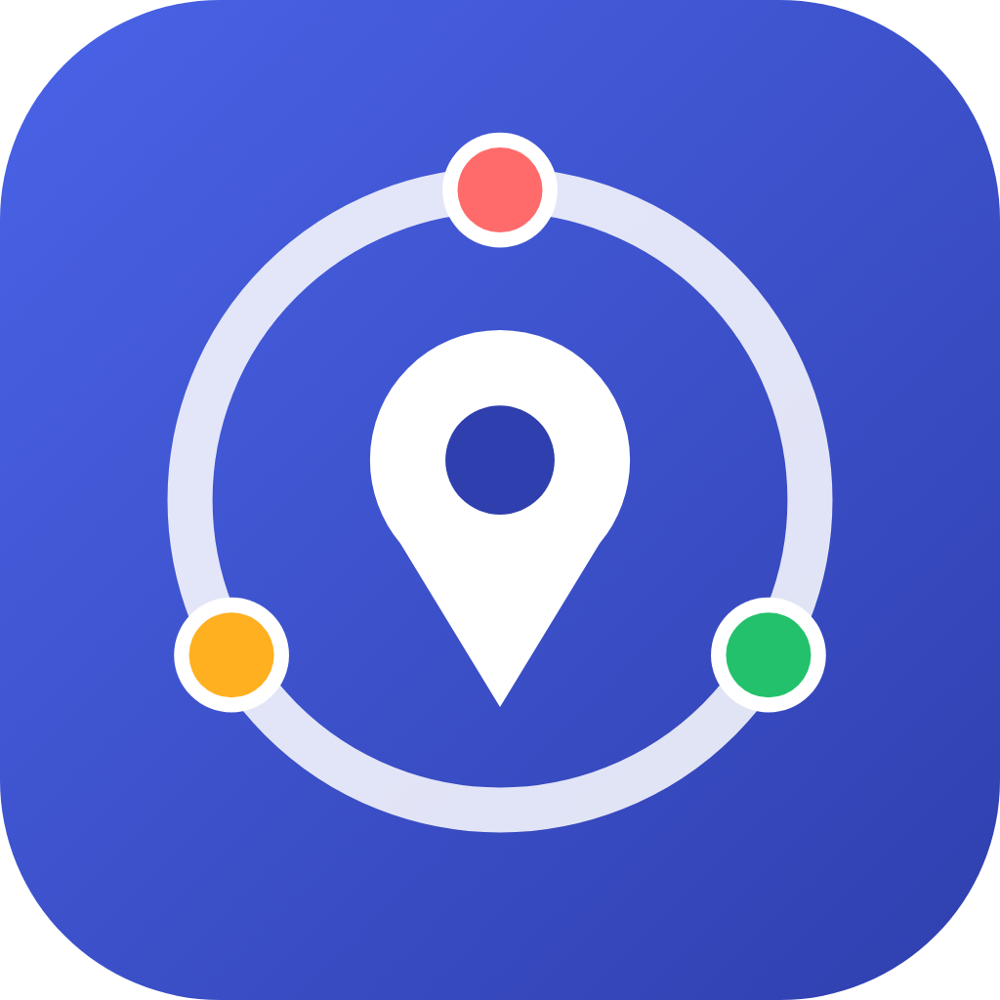

Registrazione in pochi secondi
Crei un account, crei o entri in una cerchia con un codice di invito: nessuna registrazione pubblica, si entra solo su invito di chi gia' la usa.

Condividi la posizione con chi conta, solo su invito. Famiglia, amici e colleghi: sempre tranquilli, mai controllati.
Versione compagna: utile per cerchie, messaggi e mappa dal computer. Il tracciamento continuo resta solo nell'app.
Crei un account, crei o entri in una cerchia con un codice di invito: nessuna registrazione pubblica, si entra solo su invito di chi gia' la usa.
Vedi dove si trova ciascun membro in tempo reale, con l'avatar che ha scelto: apri l'app e sai subito se sono a casa, a scuola o in giro.
Un tocco avvisa la tua cerchia (o solo i contatti di fiducia che scegli tu) con la posizione esatta. Chi riceve l'allerta puo' anche chiamarti direttamente, con un pulsante.
Puoi far parte di piu' cerchie (famiglia, amici, colleghi) e scegliere una modalita' di condivisione diversa per ciascuna: automatica con chi ti fidi di piu', approssimativa o sospesa con gli altri.
Una chat dedicata per ogni cerchia, pensata per avvisi rapidi ("sto arrivando", "chiamami") piu' che per chiacchierare: niente feed infinito da controllare.
Orario di reperibilita', tracciamento in background opt-in, riepilogo settimanale, numero di telefono per farti chiamare: tutto facoltativo, tutto disattivabile in un tocco.
Nome, avatar e batteria del telefono di ogni persona della cerchia, visibili con un tocco: utile per sapere se rischia di restare senza contatto.
Chi conta di piu' sempre a colpo d'occhio, senza aprire l'app: ultima posizione e stato aggiornati da soli (Android).
Anteprime in stile Kinly, non screenshot: arriveranno con i primi utenti registrati.
Solo le persone che inviti tu nelle tue cerchie. Non esiste un elenco pubblico e nessuno puo' cercarti: l'accesso ai dati e' protetto da regole a livello di database (Row Level Security), non solo dall'interfaccia dell'app.
Si', in ogni momento. Puoi passare alla modalita' sfumata (mostra solo la zona, non l'indirizzo esatto) oppure impostare un orario di reperibilita' per non essere visibile fuori da certe ore.
No: sul piano Free la posizione si aggiorna in tempo reale solo mentre Kinly è aperta in primo piano. Se chiudi l'app dal multitasking, si ferma, come qualsiasi altra app senza servizi in background attivi. Con Kinly+ puoi attivare (su Android) un vero servizio in background, con una notifica fissa richiesta dal sistema: aumenta molto le probabilita' che resti aggiornata anche ad app chiusa, ma nessuna app puo' garantirlo al 100% su tutti i telefoni. Su iPhone questa funzione non e' ancora disponibile: iOS non concede lo stesso tipo di accesso in background alle app di terze parti.
E' disattivato di default proprio per questo. Puoi accenderlo (funzione Kinly+, solo Android) solo se vuoi restare visibile anche ad app chiusa, e ricevi comunque un avviso quando la batteria del telefono si sta scaricando.
Avvisi subito le persone di fiducia che scegli tu, con la posizione esatta: non serve avvertire tutta la cerchia.
No. Il piano Free e' gratuito e include gia' cerchie, SOS, aree sicure e messaggi. Passi a Kinly+ solo se ti servono cronologia, cerchie illimitate o tracciamento in background.
Il sito e' una versione compagna, comoda per gestire cerchie, messaggi e mappa dal computer: la posizione pero' si aggiorna solo mentre la scheda del browser resta aperta. Notifiche push, tracciamento in background ad app chiusa e sblocco biometrico funzionano solo nell'app installata su telefono.